additional information
The city of San Antonio owes its annual Fiesta to a small group of passionate, dedicated women who started it
all with the first Battle of Flowers® Parade in 1891. What began as a patriotic celebration to honor the
heroes of the Alamo, Goliad and the Battle of San Jacinto has since evolved into one of the oldest and
largest parades in the country. Today, The Battle of the Flowers® Association – the only all-women,
all-volunteer organization producing events of its kind – continues to present the Battle of Flowers® Parade
as an integral part of the citywide celebration.
Early 1891 – The Beginning
Inspired by the flower parades of Spain, Mrs. James L. Slayden, our Congressman’s wife, suggested that San
Antonio stage its own fete April 21st, in memory of the fallen heroes of the Alamo and Battle of San
Jacinto. With the help of Mr. J.S. Alexander, the idea gained the support of the prominent all-male San
Antonio Club, and The Battle of Flowers Association was born. Mrs. H. D. Kampmann was immediately elected
its first Chairman.
1901 – Debut of the Horseless Carriage
The 10th birthday of The Battle of Flowers® Parade was celebrated, and the Express reported that this was
the first Parade to include a horseless vehicle.
1913 - 1914 – The Association Becomes Official
The organization received a charter and seal from Austin, and membership cards were issued for the first
time. Now the name was “The Battle of Flowers® Association”, with an active membership limited to 400.
1915 - 1916 – The “Dens”
The Parade had grown so large; the floats could no longer be decorated with fresh flowers. Mr. Ayres, a
benefactor of the organization, helped it acquire an old building at 420 Oak Street that came to be known as
the “Dens”. Event organizers would meet here to adorn the many floats with striking artificial flowers.
1918 – The Year of No Parade
It was the final year of World War I, and the ladies of the Battle of Flowers® Association busied themselves
with patriotic pursuits rather than festivities. There was no thought of a parade in 1918, but on Sunday,
April 21st, thousands made a solemn pilgrimage to the Alamo.
Battle of Flowers® Parade 2018: “I Remember…”
Celebrating the 300th Anniversary of San Antonio, the 2018 Parade with its earlier start time was led by the
Grand Marshal La Familia Cortez. Embracing the nostalgia and the cry “I remember…” La Familia Cortez’s
double float replicating the interior of their iconic “Mi Tierra” was a first in parade history, just as
they were the first entire family (32 strong) to serve as Grand Marshal. For the first time the Parade was
broadcast to over 200 markets around the world, showcasing our unique city and its rich cultural history

.jpg)
.jpg) 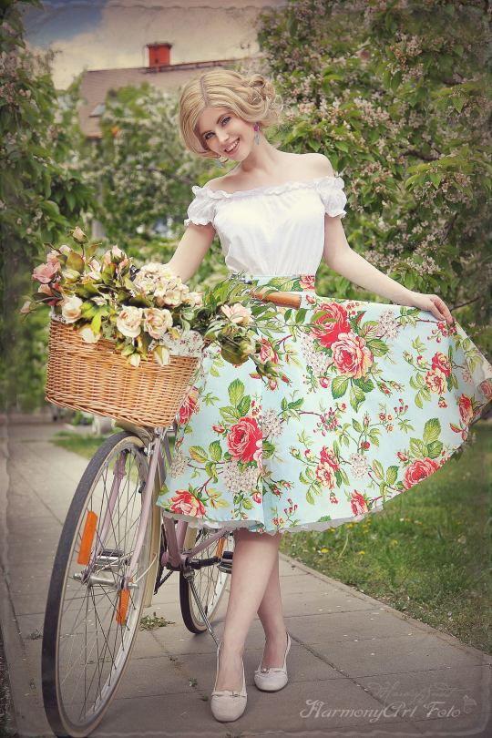
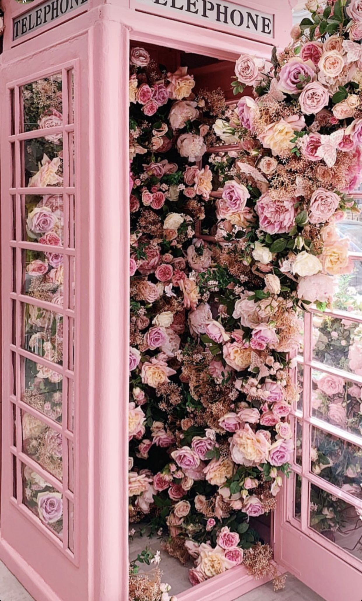
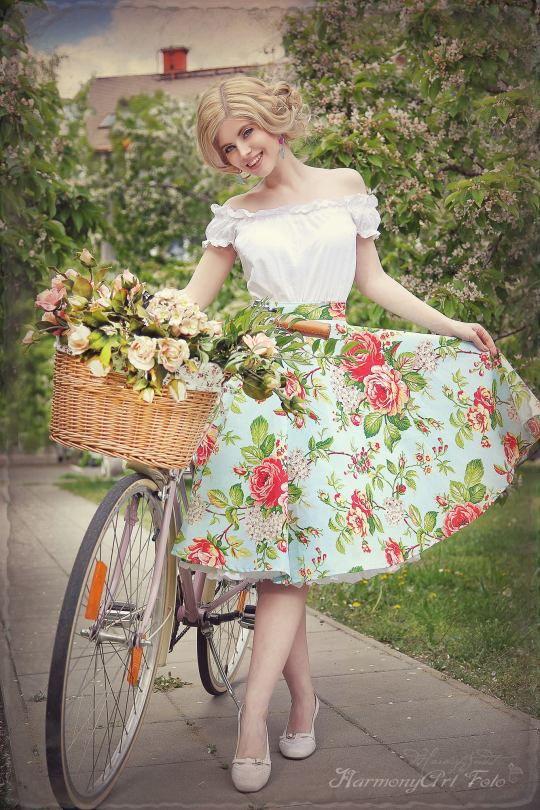
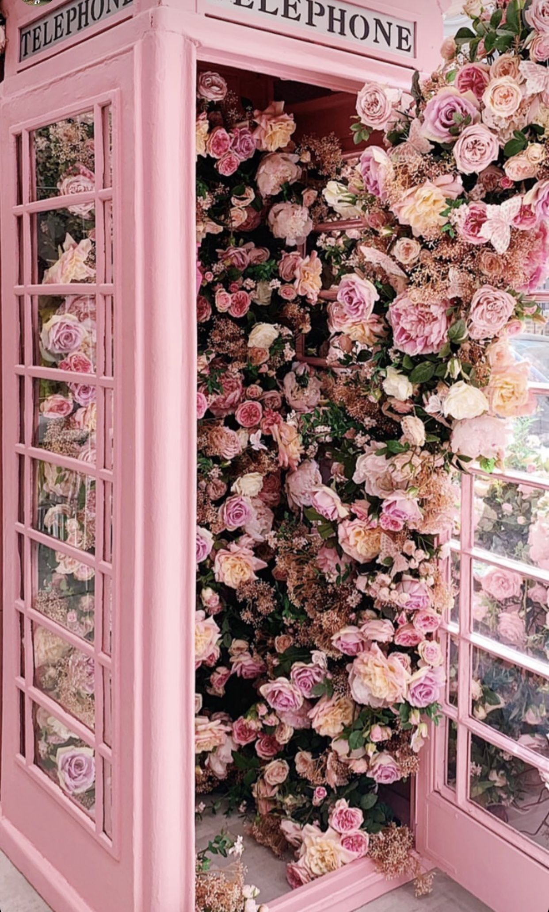
 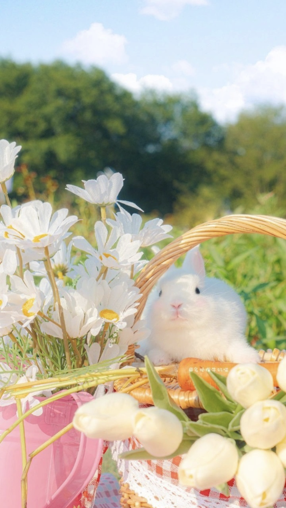
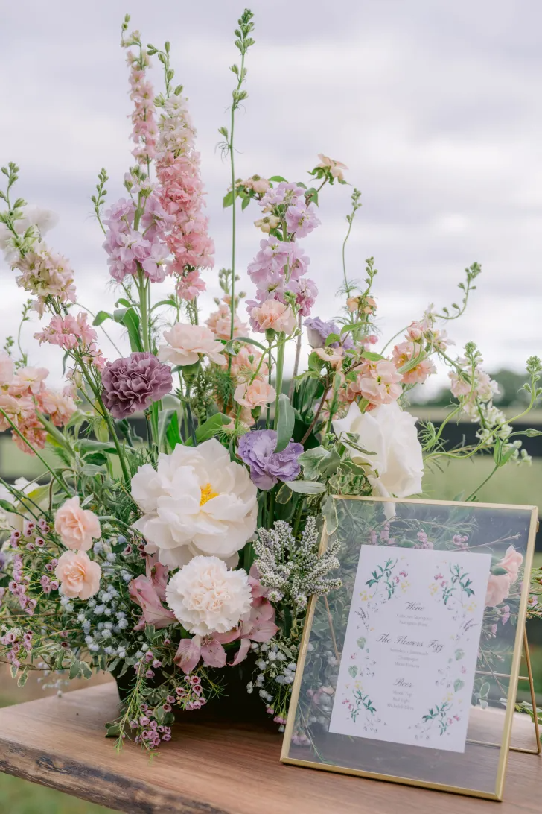
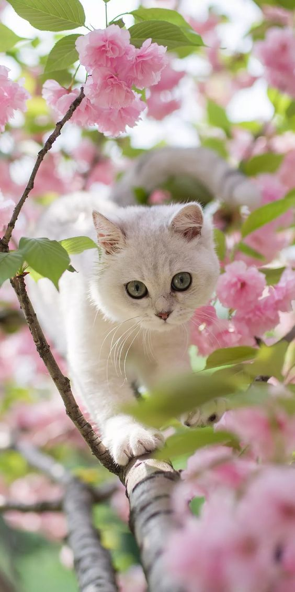
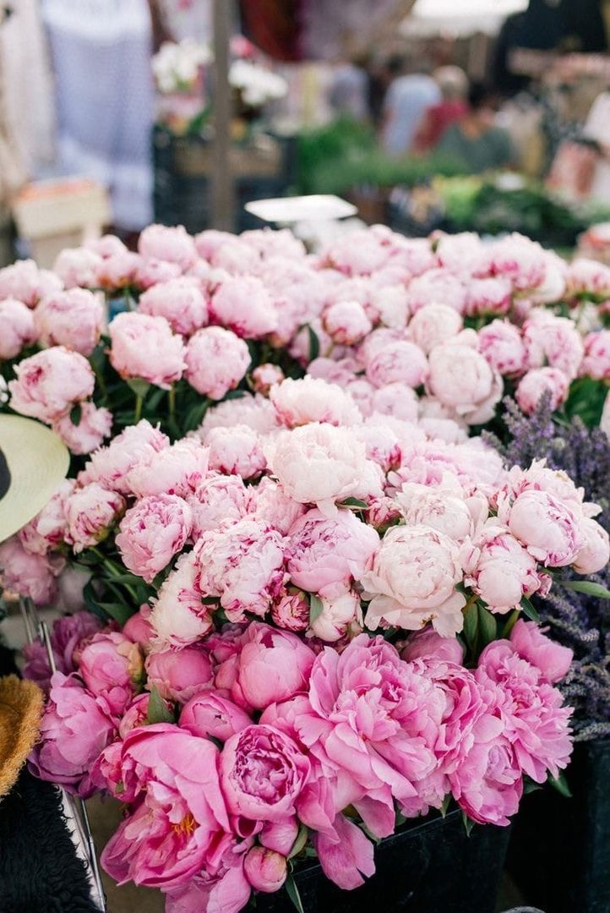
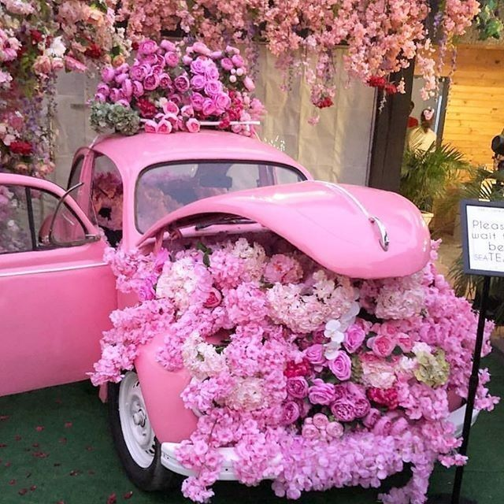
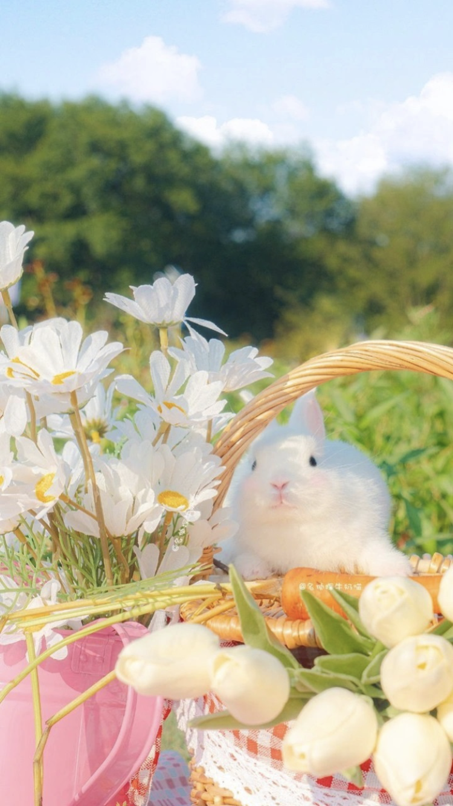
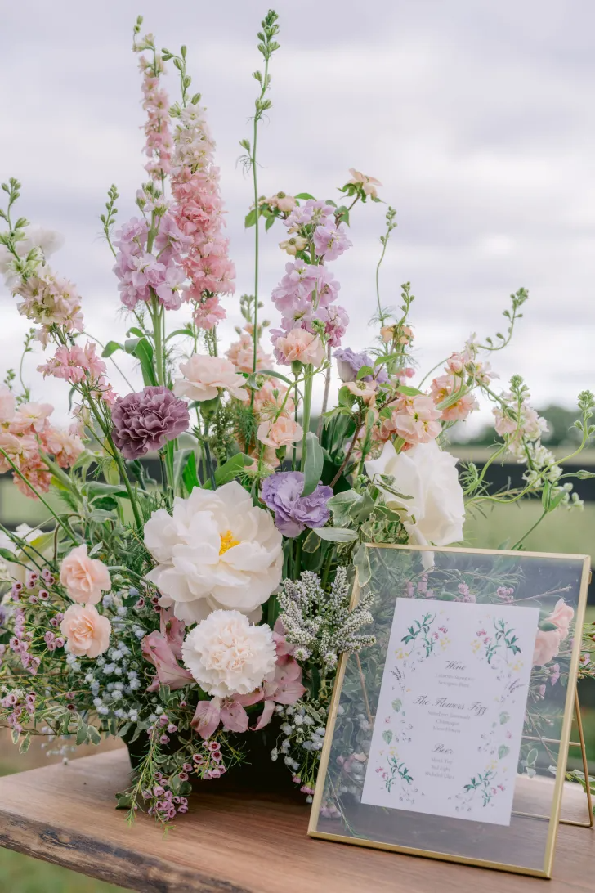
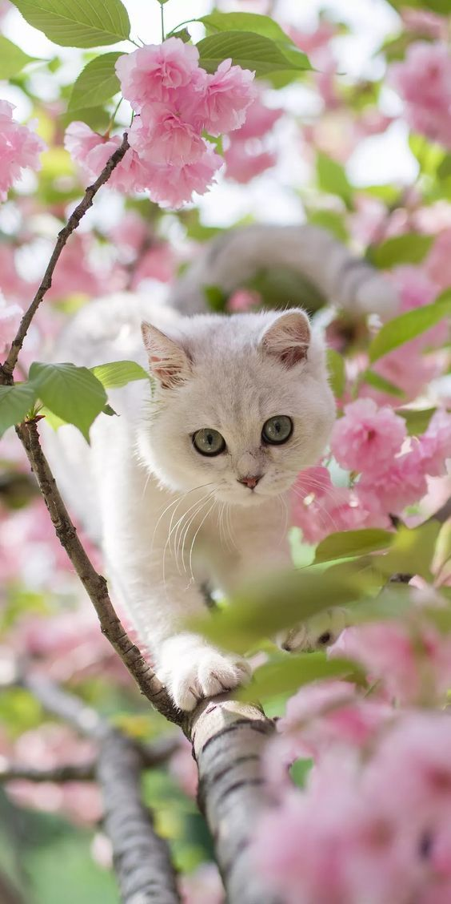
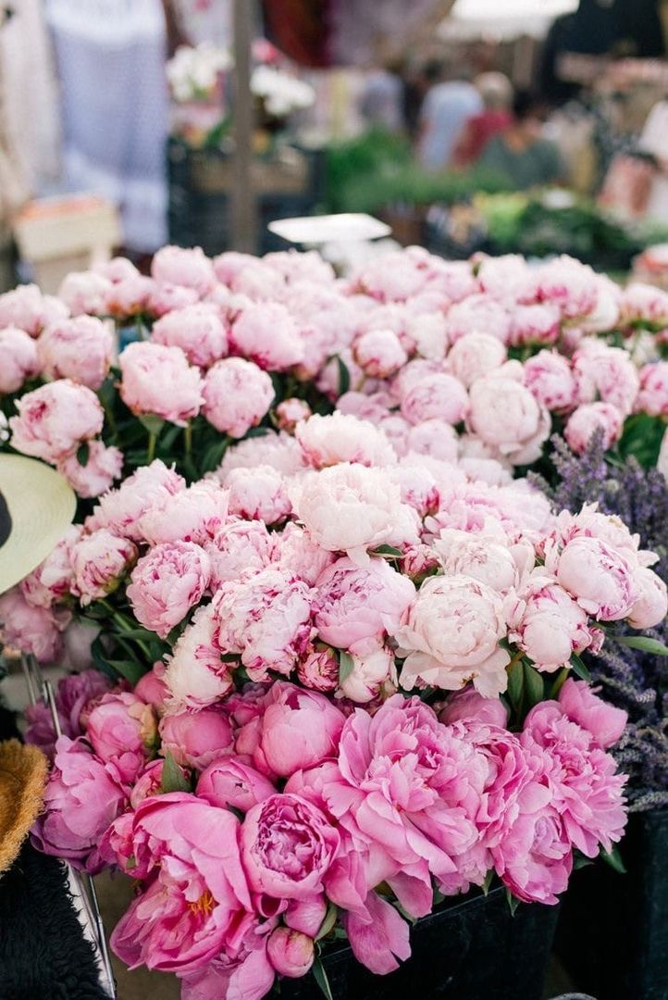
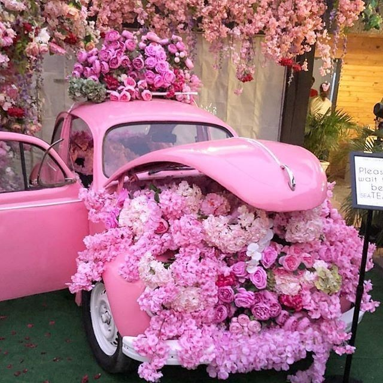
.jpg) 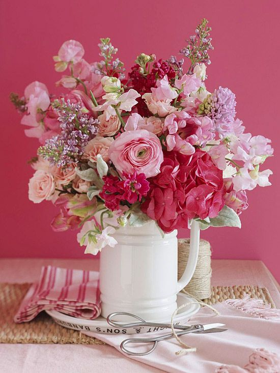
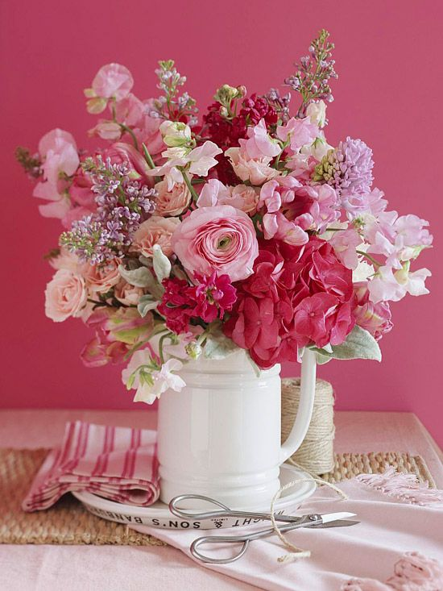


.png)